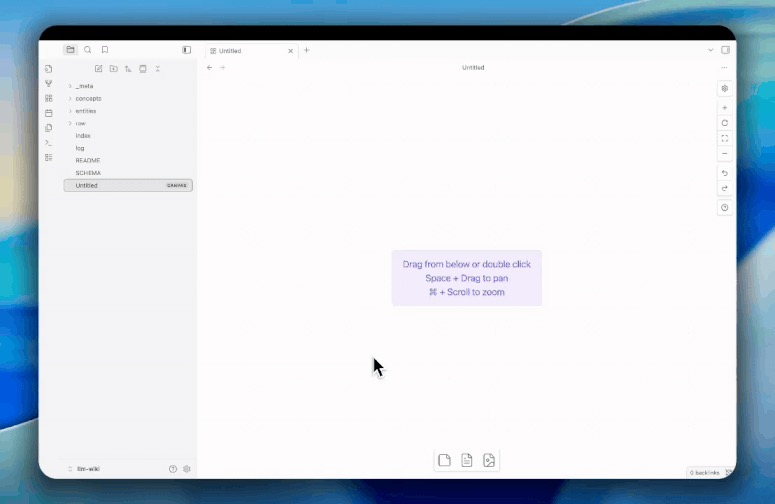

AI 빌더스 랩 설치 안내
내 컴퓨터에
AI 작업 공간을 설치합니다.
이 페이지를 Codex에 전달하면 macOS 또는 Windows를 확인한 뒤 Hermes Desktop App, Obsidian, LLM Wiki, Telegram 연결을 순서대로 진행합니다. Desktop 확인에 실패하면 전체 설치를 중단합니다.
복사한 문장을 Codex 대화창에 붙여넣으면 시작됩니다.
이 웹페이지가 프로그램을 자동 실행하지 않습니다. Codex가 공개 지침을 읽고 변경 전마다 확인받습니다.
설치 후 남는 것
- Hermes Desktop App내 컴퓨터에서 실행
- Obsidian Vault원하는 이름과 위치
- LLM Wiki공개 스타터 문서
- Telegram본인만 허용한 연결
설치 순서
Codex가 확인하고,
한 단계씩 진행합니다.
기존 설치와 파일을 먼저 확인합니다. 충돌이 있으면 덮어쓰지 않고 멈춥니다.
-
01
컴퓨터 상태 확인실행 전 결과 확인
운영체제, 저장 공간, Git, 기존 Hermes와 Obsidian을 점검합니다.
-
02
Hermes Desktop App 확인설치 승인 필요
공식 Desktop App만 설치하고 존재와 실행 가능 여부를 다시 확인합니다. 실패하면 전체 설치를 중단합니다.
-
03
새 Vault와 Obsidian 준비경로 승인 필요
Desktop App 확인 뒤 저장 위치와 이름을 직접 고르고 PARA 폴더와 LLM Wiki를 만듭니다.
-
04
OpenAI Codex 로그인계정 승인 필요
브라우저 로그인과 인증 코드는 사용자가 직접 확인합니다.
-
05
Telegram 연결과 재시작 확인자동 시작 별도 승인
본인 숫자 ID만 허용하고 실제 답변 뒤 자동 시작을 별도로 승인합니다.
원하는 이름의 Vault에
표준 구조가 생깁니다.
기존 Vault는 바꾸지 않습니다. 새 위치와 이름을 확인받은 뒤 PARA 안내서와 Raw에서 Page로 정리하는 LLM Wiki 스타터를 추가합니다.
선택한-Vault/
├── 00_Inbox/
├── 01_Projects/
├── 02_Areas/
├── 03_Resources/
├── 04_Archives/
└── 05_LLM-Wiki/
├── raw/
├── pages/
├── schema/
├── templates/
├── examples/
├── prompts/
├── index.md
└── log.md
운영체제
macOS와 Windows를
각각 확인합니다.
macOS와 Windows 모두 공식 Hermes Desktop App만 설치합니다. Desktop 확인 전에는 Vault dry-run·생성을 실행하지 않으며, 확인 실패 시 전체 설치를 중단합니다.
macOS 설치 경로
Apple Silicon 또는 Intel 여부를 확인한 뒤 공식 Hermes Desktop 설치 프로그램만 사용합니다.
- 설치 전 기존 앱과
~/.hermes상태 확인 - Desktop App 존재·실행 확인 뒤에만
hermes --version과hermes doctor실행 - Desktop 확인 실패 시 Vault 생성·Obsidian·설정·Telegram을 모두 중단
- Telegram 답변 확인 뒤
hermes gateway install별도 승인
Windows 설치 경로
Windows 버전과 PowerShell 실행 상태를 확인한 뒤 공식 Hermes Desktop 설치 프로그램만 사용합니다.
- 설치 전 기존 앱과 사용자 Hermes 폴더 확인
- Desktop App 존재·실행 확인 뒤에만
hermes --version과hermes doctor실행 - Desktop 확인 실패 시 Vault 생성·Obsidian·설정·Telegram을 모두 중단
- 자동 시작은 실제 Windows PC 검증과 별도 승인 뒤 등록
이 단계에서는
반드시 사람이 확인합니다.
Codex가 먼저 변경 내용을 보여주고 사용자의 답을 기다립니다.
- 관리자 권한과 앱 설치
- Vault 위치와 이름
- OpenAI 계정 로그인
- Hermes 비밀번호형 입력란에 Telegram Bot Token 붙여넣기
- Gateway 자동 시작 등록
Token과 로그인 정보는 공개 문서에 남기지 않습니다.
Telegram Bot Token은 Hermes 공식 비밀번호형 자격증명 입력란을 연 뒤 사용자가 직접 붙여넣고 Enter 또는 저장을 누릅니다. Codex 대화창, 홈페이지, 공개 문서에는 붙여넣지 않습니다. 웹사이트·공개 저장소·Codex 문서에는 Token, 비밀번호, OAuth 코드, API 키, 세션 쿠키를 받거나 저장하지 않으며, Codex는 Token을 다시 말하거나 화면에 출력하지 않습니다. Telegram은
TELEGRAM_ALLOWED_USERS에 본인 숫자 ID만 넣어 확인합니다.
중간에 막히면
완료로 표시하지 않습니다.
실패한 단계와 다시 시작할 지점을 설치 결과 문서에 남깁니다.
Hermes Desktop App 확인에 실패했을 때
Hermes Desktop App 설치가 확인되지 않아 전체 설치를 중단합니다. Codex는 CLI 전용 설치를 자동 실행하지 않습니다. CLI 전용 사용이 필요하면 Hermes 공식 설치 문서를 직접 확인하고 설치한 뒤 다시 시작합니다.
Hermes 명령을 찾을 수 없을 때
Desktop App 존재와 실행 가능 여부를 먼저 확인합니다. Desktop 확인 뒤 새 셸에서 hermes --version과 hermes doctor를 실행합니다.
기존 Vault 또는 폴더와 이름이 겹칠 때
기존 폴더를 건드리지 않고 새 이름을 제안한 뒤 사용자에게 다시 확인받습니다.
Telegram이 답하지 않을 때
Bot Token을 화면에 출력하지 않고 Gateway 상태와 본인 숫자 ID 허용 여부를 따로 확인합니다. 잘못된 Token이면 값을 다시 보여주지 않고 같은 Hermes 비밀번호형 입력란을 다시 열어 새 Token을 붙여넣게 합니다. 채팅이나 공개 로그에 노출되면 설치를 멈추고 BotFather /revoke로 폐기한 뒤 새 Token을 받습니다.
Windows 자동 시작이 확인되지 않을 때
임의 등록하지 않고 미완료로 남긴 뒤 실제 Windows PC에서 다시 검증합니다.
설치 요청문을 복사해
Codex에 붙여넣으세요.
공개 원본의 안정 버전을 지정해 같은 지침으로 시작합니다.
복사한 문장을 새 Codex 대화창에 붙여넣으세요.
복사되는 요청문 확인
https://aihubos.github.io/builders-lounge/install/ 이 페이지의 설치 지침과 아래 버전 고정 원문을 읽고 내 컴퓨터에 설치를 진행해줘. 지침 원문: https://raw.githubusercontent.com/jeremylee0213/builderslab-starter/v1.2.1/prompts/codex-install.md 안정 버전: v1.2.1 먼저 운영체제와 기존 설치 상태를 읽기 전용으로 점검해줘. Desktop App이 없으면 공식 Desktop 설치 프로그램과 변경 내용을 보여주고 번호형 승인을 받아 Desktop 설치만 시도해줘. 설치·실행 확인에 실패하면 Vault dry-run·생성, Obsidian 설치, Hermes 설정, Telegram 연결을 모두 중단해줘. Codex는 CLI 전용 설치를 자동 실행하지 말고, CLI 전용 사용이 필요하면 공식 설치 문서를 직접 확인·설치한 뒤 다시 시작할 수 있다고 안내해줘. 질문·승인·선택은 질문 하나만 별도 메시지로 보내고 `1`, `2`, `3` 형식으로 답하게 해줘. Bot Token 단계에서는 Hermes 자격증명 입력란을 열고 사용자가 직접 붙여넣게 안내해줘. Token은 Codex/Buzz/ChatGPT 대화, 홈페이지, Markdown, 문서, 일반 로그에 붙여넣거나 출력하지 말고 기존 파일도 덮어쓰지 마.
공개 원본: builderslab-starter v1.2.1